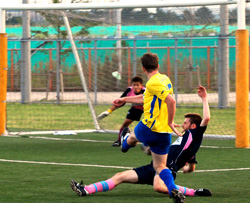
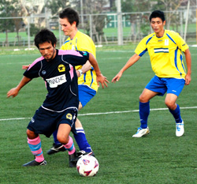

|
Fukuda Denshi, Saturday 11th September
On a balmy night in the far-flung reaches of Chiba, the Geckoes battled bravely to 3 hard-earned points against a strong Panthers side.
The first half started off fairly evenly, but it was the Geckoes who would strike first. After Andy Gill beautifully cushioned the ball off his back (he went up for a header, got spun round and the ball hit him on the arse) the ball broke to Scandinavian schemer Mikel Troen, who took a touch to steady himself before neatly dispatching a volley into the corner of the Panthers net.
As the half continued, the Panthers looked more and more dangerous and were able to restore parity when Pete Swinney burst through an alarmingly square-looking Geckoes backline and calmly lobbed the ball over the despairing lunge of Geckoes talented, yet vertically challenged, goalkeeper, Goro. The only other real incident of note was an unfortunate clash of heads between Geckoes’ Allan Mogui and Panthers defender Richard Duffy, both players having to leave the field (and both would later require stitches). 1-1 was how the half ended.
The Geckoes started the second half brightly and would again take the lead after a series of corners put pressure on the Panthers goal. From their 17th corner in quick succession, Geckoes’ centre-half Christian Catlow battled fiercely with a Panther on the edge of the box. Catlow was pole-axed spectacularly, but the ball broke kindly to Geckoes’ impresario Simon Bromwell, who bulleted in what can only be described as a phenomenal 20-yard strike, the ball hitting the bar, bouncing down on the line and then hitting the bar again before going in. Think 1995-6 season Tony Yeboah, Leeds v Liverpool (somewhat ironic considering this goal left a then 5 year old Bromwell in tears – hopefully this goal will go some way towards putting those demons to rest).
The Panthers battled back fiercely for the remainder of the game and the Geckoes were somewhat lucky to hang on. In an almost carbon-copy of their first goal, one of the Panthers midfielders lobbed an onrushing Goro in the Geckoes goal, but saw his shot rebound back off the crossbar. Then, with almost the last kick of the game, another Panthers player somehow missed an open goal from inside the six-yard box when it would have been far easier to score. However, the Geckoes held on, although celebrations were cut short at the final whistle as the Geckoes came off to the mother of all rollickings from the manager, after totally losing their shape and running around like headless chickens for the last 20 minutes.
MOTM has to go to Simon ‘Yeboah’ Bromwell for his magnificent strike, but honorable mentions to Michael Bacon and Christian Catlow for some stalwart defending as well. Much to improve on for the Geckoes, but 4 points from their first two games not a bad start at all.
Report by Andy Gill
|